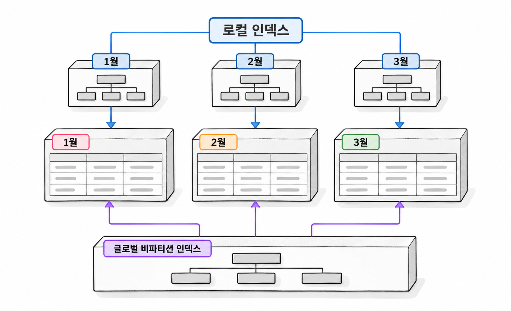

20장. 파티션 인덱스와 유지관리란?
파티션 테이블의 인덱스는 조회 방식과 데이터 관리 방식을 함께 고려해 선택합니다. 월별 조회에 유리한 인덱스가 거래번호만으로 찾는 조회에도 유리한 것은 아닙니다. 오래된 파티션을 제거할 때 인덱스를 어떻게 유지할지도 정해야 합니다.
1. 파티션 테이블의 인덱스
1.1 로컬·글로벌 인덱스
로컬 인덱스(local index)는 테이블의 파티션에 대응하도록 나눈 인덱스입니다. 각 로컬 인덱스 파티션에는 대응하는 테이블 파티션의 행만 들어갑니다. 월별 거래 테이블이라면 각 월의 거래를 가리키는 인덱스도 월별로 나뉩니다.
로컬 인덱스의 검색 키가 반드시 거래일자로 시작해야 하는 것은 아닙니다. 거래일자로 나눈 테이블에 회원번호만으로 로컬 인덱스를 만들 수도 있습니다. 이때 각 월의 인덱스 안에서 회원번호가 정렬됩니다.
글로벌 인덱스(global index)는 테이블 파티션과 독립적으로 구성하는 인덱스입니다. 여러 테이블 파티션의 행을 하나의 검색 구조에서 찾습니다. 글로벌 인덱스 자체를 파티션으로 나눌 수도 있습니다.
| 구분 | 로컬 인덱스 | 글로벌 인덱스 |
|---|---|---|
| 테이블 파티션과의 관계 | 파티션별로 대응 | 독립적으로 구성 |
| 날짜 없는 거래번호 조회 | 여러 인덱스 파티션을 탐색할 수 있음 | 거래번호를 기준으로 직접 탐색 가능 |
| 오래된 월의 제거 | 해당 월의 인덱스도 함께 관리 | 여러 월에 걸친 인덱스 항목에 영향 |
| 주요 선택 기준 | 기간별 조회와 유지관리 | 전체 기간에 걸친 검색과 유일성 |

1.2 글로벌 비파티션·파티션 인덱스
글로벌 비파티션 인덱스(global nonpartitioned index)는 전체 테이블의 키를 하나의 인덱스로 관리합니다. 날짜 조건 없이 거래번호 하나를 찾는 조회에 적합한 후보입니다.
글로벌 파티션 인덱스(global partitioned index)는 인덱스 자체를 나눕니다. Oracle은 글로벌 인덱스에 Range·Hash 파티셔닝을 지원합니다. 테이블은 거래일자로 나누고 인덱스는 거래번호로 나눌 수 있습니다.
아래 코드는 구조를 비교하기 위한 코드 조각입니다. trade20 테이블이 존재한다고 가정합니다.
코드 조각
CREATE INDEX trade20_member_lix
ON trade20 (member_id, trade_at)
LOCAL;
CREATE INDEX trade20_id_gix
ON trade20 (trade_id);
CREATE INDEX trade20_id_ghix
ON trade20 (trade_id)
GLOBAL PARTITION BY HASH (trade_id)
PARTITIONS 4;두 번째 인덱스는 LOCAL이나 파티션 정의가 없으므로 글로벌 비파티션 인덱스입니다. 세 번째 인덱스는 거래번호에 따라 네 인덱스 파티션으로 나뉩니다. 테이블의 월별 파티션과는 별개입니다.
세 인덱스를 모두 유지할 필요는 없습니다. 같은 검색 키의 인덱스를 중복해서 만들면 변경 비용과 공간 사용량이 늘어납니다. 실무에서는 조회와 유지관리 요구에 맞는 구성을 선택합니다.
1.3 유일성 제약과 파티션 키 조건
로컬 유일 인덱스의 키에는 테이블의 파티션 키가 모두 포함되어야 합니다. 같은 키가 같은 인덱스 파티션에 모여야 중복을 검증할 수 있기 때문입니다.
거래일자로 파티셔닝한 테이블에는 (trade_id, trade_at)의 로컬 유일 인덱스를 만들 수 있습니다. 그러나 이 인덱스는 거래번호 하나의 유일성을 보장하지 않습니다. 거래일자가 다르면 같은 거래번호가 들어갈 수 있습니다.
| 업무 규칙 | 유일성을 검증할 키 | 인덱스 선택 |
|---|---|---|
| 거래번호는 전체 기간에서 유일함 | trade_id | 글로벌 유일 인덱스 |
| 같은 거래일시 안에서 거래번호가 유일함 | trade_id, trade_at | 로컬 유일 인덱스 가능 |
로컬 인덱스를 사용하려고 기본키에 날짜를 덧붙이면 업무 규칙까지 바뀝니다. 자식 테이블의 외래키 구성에도 영향을 줍니다. 먼저 유일성의 범위를 확정하고 인덱스를 선택해야 합니다.
2. 조회 범위와 인덱스 선택
2.1 단일 파티션·여러 파티션 조회
회원 한 명의 한 달 거래를 조회한다면 월별 파티션과 회원번호 로컬 인덱스를 함께 활용할 수 있습니다. 조회할 달을 먼저 좁히고, 그달의 인덱스에서 회원번호를 찾습니다.
반면 회원 한 명의 전체 거래를 조회하면 여러 월의 로컬 인덱스를 탐색할 수 있습니다. 월별 파티션이 많아질수록 반복 탐색 비용도 커질 수 있습니다. 이 조회가 빈번하다면 회원번호 글로벌 인덱스도 비교 대상입니다.
| 조회 요구 | 우선 비교할 접근 |
|---|---|
| 한 달의 특정 회원 거래 | 프루닝 후 로컬 인덱스 탐색 |
| 날짜 없는 거래번호 단건 조회 | 거래번호 글로벌 인덱스 탐색 |
| 한 달 거래 대부분의 집계 | 해당 파티션 전체 스캔 |
| 여러 해에 걸친 회원 거래 | 여러 로컬 인덱스 탐색과 글로벌 인덱스 탐색 비교 |
인덱스 종류만으로 성능을 판단하지 않습니다. 반환 행 수, 테이블 접근량, 실행 빈도까지 함께 비교합니다.
2.2 파티션 프루닝과 인덱스 탐색의 결합
파티션 프루닝은 읽을 파티션을 줄입니다. 인덱스 탐색은 선택된 파티션 안에서 읽을 키의 범위를 줄입니다. 두 방법은 서로 다른 단계에서 읽기량을 줄입니다.
다음 예제는 월별 거래 테이블에 회원번호 로컬 인덱스와 거래번호 글로벌 유일 인덱스를 만듭니다. 파티셔닝 기능을 사용할 수 있는 Oracle 21c 실습 계정에서 실행합니다. 객체 이름은 앞 장과 겹치지 않게 정했습니다.
예제 20-1 — 월별 로컬 인덱스와 전체 기간 기본키 만들기
파일명: partition_indexes20.sql
CREATE TABLE trade20 (
trade_id NUMBER NOT NULL,
trade_at DATE NOT NULL,
member_id NUMBER NOT NULL,
amount NUMBER(12, 2) NOT NULL
)
PARTITION BY RANGE (trade_at) (
PARTITION p202601 VALUES LESS THAN (DATE '2026-02-01'),
PARTITION p202602 VALUES LESS THAN (DATE '2026-03-01')
);
CREATE UNIQUE INDEX trade20_pk_gix
ON trade20 (trade_id);
ALTER TABLE trade20
ADD CONSTRAINT trade20_pk
PRIMARY KEY (trade_id)
USING INDEX trade20_pk_gix;
CREATE INDEX trade20_member_lix
ON trade20 (member_id, trade_at)
LOCAL;
INSERT INTO trade20 VALUES
(1, DATE '2026-01-10', 101, 12000);
INSERT INTO trade20 VALUES
(2, DATE '2026-02-05', 101, 18000);
INSERT INTO trade20 VALUES
(3, DATE '2026-02-07', 202, 25000);
COMMIT;
SELECT trade_id, amount
FROM trade20
WHERE trade_at >= DATE '2026-02-01'
AND trade_at < DATE '2026-03-01'
AND member_id = 101
ORDER BY trade_id;실행 결과
TRADE_ID AMOUNT
-------- ------
2 18000날짜 조건으로 2월 파티션을 선택할 수 있습니다. 그 안에서는 (member_id, trade_at) 인덱스가 탐색 후보입니다. 다만 세 행뿐인 예제에서는 전체 스캔이 선택될 수 있습니다. 이 예제의 목적은 구조와 결과를 확인하는 데 있습니다.
실행 통계는 11장 2.2항의 공통 실행 방법으로 확인합니다. 측정 SQL에 고유 주석을 붙이고 SQL 식별자와 자식 커서 번호를 지정합니다. 파티션 연산의 PSTART·PSTOP과 인덱스 연산의 Starts·Buffers를 함께 읽습니다. 파티션을 하나만 읽더라도 그 안에서 많은 블록을 읽었다면 추가 개선이 필요할 수 있습니다.
2.3 파티션 단위 조인의 적용 조건
파티션 단위 조인(partition-wise join)은 큰 조인을 대응하는 파티션 사이의 작은 조인으로 나누는 방법입니다.
완전 파티션 단위 조인을 사용하려면 두 테이블이 조인 키를 기준으로 서로 대응하도록 파티셔닝되어야 합니다. Reference Partitioning으로 부모와 자식의 파티션을 대응시킨 경우도 후보가 됩니다.
예를 들어 두 테이블을 회원번호로 같은 수의 Hash 파티션으로 나누면, 같은 회원번호의 행이 대응하는 파티션에 모입니다. 각 파티션 쌍을 조인하면 병렬 실행 중 데이터 재분배를 줄일 수 있습니다.
두 테이블이 모두 월별이라는 사실만으로는 충분하지 않습니다. 거래일자로 나눈 두 테이블을 회원번호만으로 조인하면 서로 다른 달의 행도 연결될 수 있습니다.
부분 파티션 단위 조인은 한쪽의 파티션 구성에 맞춰 다른 쪽의 행을 병렬로 재분배합니다. 완전 파티션 단위 조인보다 데이터 이동이 더 필요합니다. 실제 적용 여부는 실행 계획에서 확인합니다.
3. 데이터 수명 주기와 유지관리
3.1 ADD·DROP·TRUNCATE·SPLIT·MERGE
파티션 유지관리는 데이터의 생성부터 제거까지를 파티션 단위로 관리하는 작업입니다.
| 작업 | 바뀌는 내용 | 월별 거래 관리 사례 |
|---|---|---|
ADD | 새 파티션 추가 | 다음 달 공간 준비 |
DROP | 파티션 정의와 데이터 제거 | 보관 기간이 지난 월 제거 |
TRUNCATE | 정의를 남기고 데이터 제거 | 특정 월을 비운 뒤 다시 적재 |
SPLIT | 한 파티션을 여러 파티션으로 분리 | 넓은 기간을 월별로 분리 |
MERGE | 여러 파티션을 하나로 통합 | 오래된 월을 큰 보관 단위로 통합 |
Range 파티션의 ADD는 기존의 가장 큰 경계값 뒤에 파티션을 추가합니다. 마지막 파티션이 MAXVALUE라면 그 뒤에 더 큰 경계를 추가할 수 없습니다. 이 경우 마지막 파티션을 SPLIT합니다.
DROP과 TRUNCATE는 삭제 대상 행을 한 건씩 지정하는 작업과 다릅니다. Oracle DDL의 암묵적 커밋이 적용되며 ROLLBACK으로 취소할 수 없습니다. DROP PARTITION으로 제거한 파티션은 휴지통에서도 복원할 수 있다고 기대해서는 안 됩니다.
다음 예제는 예제 20-1을 실행한 상태에서 이어서 실행합니다.
예제 20-2 — 다음 달을 준비하고 오래된 달 제거하기
이어서: 예제 20-1
파일명: maintain_month20.sql
ALTER TABLE trade20
ADD PARTITION p202603
VALUES LESS THAN (DATE '2026-04-01');
ALTER TABLE trade20
DROP PARTITION p202601
UPDATE INDEXES;
SELECT partition_name, partition_position
FROM user_tab_partitions
WHERE table_name = 'TRADE20'
ORDER BY partition_position;
SELECT trade_id
FROM trade20
ORDER BY trade_id;실행 결과
PARTITION_NAME PARTITION_POSITION
-------------- ------------------
P202602 1
P202603 2TRADE_ID
--------
2
3UPDATE INDEXES는 파티션을 제거할 때 글로벌 인덱스를 사용 가능한 상태로 유지하는 절입니다. Oracle 21c에서 지원 조건을 만족하는 힙 테이블의 DROP·TRUNCATE는 비동기 글로벌 인덱스 유지관리를 활용합니다. 제거된 행의 인덱스 항목은 나중에 정리합니다. 따라서 명령이 완료되어도 모든 정리 작업이 끝난 것은 아닙니다.
로컬 인덱스의 파티션 구성은 테이블 변경을 따라갑니다. 그러나 모든 유지관리 작업에서 인덱스가 자동으로 사용 가능한 상태를 유지한다고 가정하면 안 됩니다. 특히 데이터가 재배치되는 작업은 옵션에 따라 인덱스에 미치는 영향을 확인해야 합니다.
3.2 EXCHANGE PARTITION을 이용한 적재
파티션 교환(partition exchange)은 테이블 파티션과 별도 테이블의 저장 내용을 맞바꾸는 작업입니다. 별도 테이블에서 새 데이터를 준비한 뒤 운영 파티션으로 편입할 때 사용합니다.
행을 운영 테이블에 한 건씩 옮기는 부담을 줄일 수 있습니다. 다만 데이터 검증과 글로벌 인덱스 갱신까지 포함하면 작업 시간이 길어질 수 있습니다. 교환이 항상 즉시 끝난다고 보면 안 됩니다.
교환 테이블은 대상 파티션과 구조가 맞아야 합니다. CREATE TABLE ... FOR EXCHANGE WITH TABLE로 교환에 맞는 컬럼 구조를 만들 수 있습니다. 인덱스는 별도로 준비합니다.
다음 예제는 예제 20-2까지 실행한 상태에서 이어서 실행합니다. 비어 있는 3월 파티션에 거래 두 건을 편입합니다.
예제 20-3 — 검증한 거래를 월 파티션으로 교환하기
이어서: 예제 20-2
파일명: exchange_month20.sql
CREATE TABLE trade20_stage
FOR EXCHANGE WITH TABLE trade20;
CREATE INDEX trade20_stage_member_ix
ON trade20_stage (member_id, trade_at);
INSERT INTO trade20_stage VALUES
(4, DATE '2026-03-03', 101, 30000);
INSERT INTO trade20_stage VALUES
(5, DATE '2026-03-08', 303, 42000);
COMMIT;
SELECT COUNT(*) AS invalid_rows
FROM trade20_stage
WHERE trade_at IS NULL
OR trade_at < DATE '2026-03-01'
OR trade_at >= DATE '2026-04-01';
ALTER TABLE trade20
EXCHANGE PARTITION p202603
WITH TABLE trade20_stage
INCLUDING INDEXES
WITH VALIDATION
UPDATE GLOBAL INDEXES;
SELECT COUNT(*) AS march_rows,
SUM(amount) AS march_amount
FROM trade20 PARTITION (p202603);
SELECT COUNT(*) AS stage_rows
FROM trade20_stage;실행 결과
INVALID_ROWS
------------
0MARCH_ROWS MARCH_AMOUNT
---------- ------------
2 72000STAGE_ROWS
----------
0WITH VALIDATION은 교환할 행이 대상 파티션 범위에 맞는지 검증합니다. 앞의 조회는 적재 오류를 미리 찾는 용도입니다. 실제 교환 시점에도 범위 검증을 유지합니다.
INCLUDING INDEXES는 대응하는 로컬 인덱스와 교환 테이블의 인덱스도 교환합니다. UPDATE GLOBAL INDEXES는 운영 테이블의 글로벌 인덱스를 갱신합니다. 두 절의 역할이 다릅니다.
교환은 양쪽 내용을 맞바꿉니다. 이번에는 대상 파티션이 비어 있어 교환 후 준비 테이블도 비었습니다. 대상 파티션에 데이터가 있었다면 기존 데이터가 준비 테이블로 옮겨집니다.
3.3 인덱스 상태·통계·잠금·복구 계획
유지관리 명령이 성공했더라도 대표 조회와 데이터 변경이 정상인지 확인해야 합니다. 인덱스 상태와 통계도 따로 점검합니다.
비파티션 인덱스는 USER_INDEXES.STATUS를 확인합니다. 파티션 인덱스는 USER_IND_PARTITIONS.STATUS를 확인해야 합니다. 파티션 인덱스의 상위 상태만으로 개별 파티션의 사용 가능 여부를 판단하지 않습니다.
코드 조각
SELECT index_name, partitioned, status
FROM user_indexes
WHERE table_name = 'TRADE20'
ORDER BY index_name;
SELECT index_name, partition_name, status
FROM user_ind_partitions
WHERE index_name IN (
SELECT index_name
FROM user_indexes
WHERE table_name = 'TRADE20'
)
ORDER BY index_name, partition_position;글로벌 비파티션 인덱스의 정상 상태는 VALID이며, 인덱스 파티션의 정상 상태는 USABLE입니다. UNUSABLE이면 원인과 복구 범위를 판단한 뒤 재구성합니다. 파티션 인덱스는 필요한 파티션 단위로 재구성할 수 있습니다.
통계는 실제 데이터와 비교합니다. 새 월을 적재했거나 큰 파티션을 제거했다면 파티션별 행 수와 통계 수집 시각을 확인합니다. 변경된 파티션 통계뿐 아니라 전체 테이블 통계도 검토합니다. 전체 통계를 갱신할 때마다 대량 스캔이 필요해 비용이 크다면 증분 통계의 적용 조건을 검토할 수 있습니다.
유지관리 작업에는 DDL 잠금이 필요합니다. 진행 중인 트랜잭션 때문에 작업이 대기하거나 실패할 수 있습니다. EXCHANGE를 사용하더라도 잠금이 없어지는 것은 아닙니다. 운영 환경에서는 적재 마감 시점과 쓰기 중단 범위를 정합니다.
작업 계획에는 다음 내용을 기록합니다.
| 확인 대상 | 기록할 내용 |
|---|---|
| 제거 범위 | 실제 경계값, 건수, 금액 합계 |
| 참조 관계 | 자식 데이터의 보관·제거 순서 |
| 인덱스 | 유지 옵션, 상태 확인, 재구성 시간 |
| 통계 | 갱신 대상과 대표 SQL의 실행 계획 |
| 잠금 | 장기 트랜잭션 확인과 작업 시간대 |
| 복구 | 보관 데이터, 재적재 절차, 복구 예상 시간 |
DROP 전에 오래된 파티션을 별도 테이블로 교환해 보관하는 방안도 검토할 수 있습니다. 다만 교환 후 쓰기가 다시 시작되었다면 단순히 반대 방향으로 교환해서는 안 됩니다. 그 사이 추가된 데이터까지 확인해야 합니다.
4. 연습문제 — 월별 적재와 오래된 데이터 제거 설계
요구사항
거래 데이터는 거래일자 기준으로 월별 저장합니다. 최근 24개월을 온라인으로 보관합니다. 보관 기간이 지난 거래는 별도 저장소에 보관한 뒤 제거합니다.
거래번호는 전체 기간에서 유일해야 합니다. 주요 조회는 회원 한 명의 최근 한 달 거래와 거래번호 단건 조회입니다. 매월 초에 전월의 외부 거래 데이터를 검증한 뒤 편입합니다.
- 월별 파티션 경계와 다음 달 파티션 생성 시점을 정합니다.
- 거래번호 기본키와 회원별 조회용 인덱스를 설계합니다.
- 교환 테이블의 준비·검증·교환·결과 확인 순서를 작성합니다.
- 오래된 월의 보관·제거 순서와 인덱스 유지 옵션을 정합니다.
- 적재 이후 도착한 정정 데이터의 반영 방법을 정합니다.
- 잠금 대기나 검증 실패 시 중단 지점과 재실행 방법을 기록합니다.
완료 조건
- 거래번호가 다른 월에서도 중복되지 않습니다.
- 월별 조회와 날짜 없는 조회의 인덱스 선택 근거가 있습니다.
- 교환 전후의 건수와 금액 합계가 일치합니다.
- 대상 월을 벗어난 데이터는 편입되지 않습니다.
- 파티션 제거 후 인덱스 상태와 대표 SQL을 확인합니다.
- 제거한 데이터의 복구 경로가 명확합니다.
- DDL 이후
ROLLBACK에 의존하지 않는 복구 계획이 있습니다.